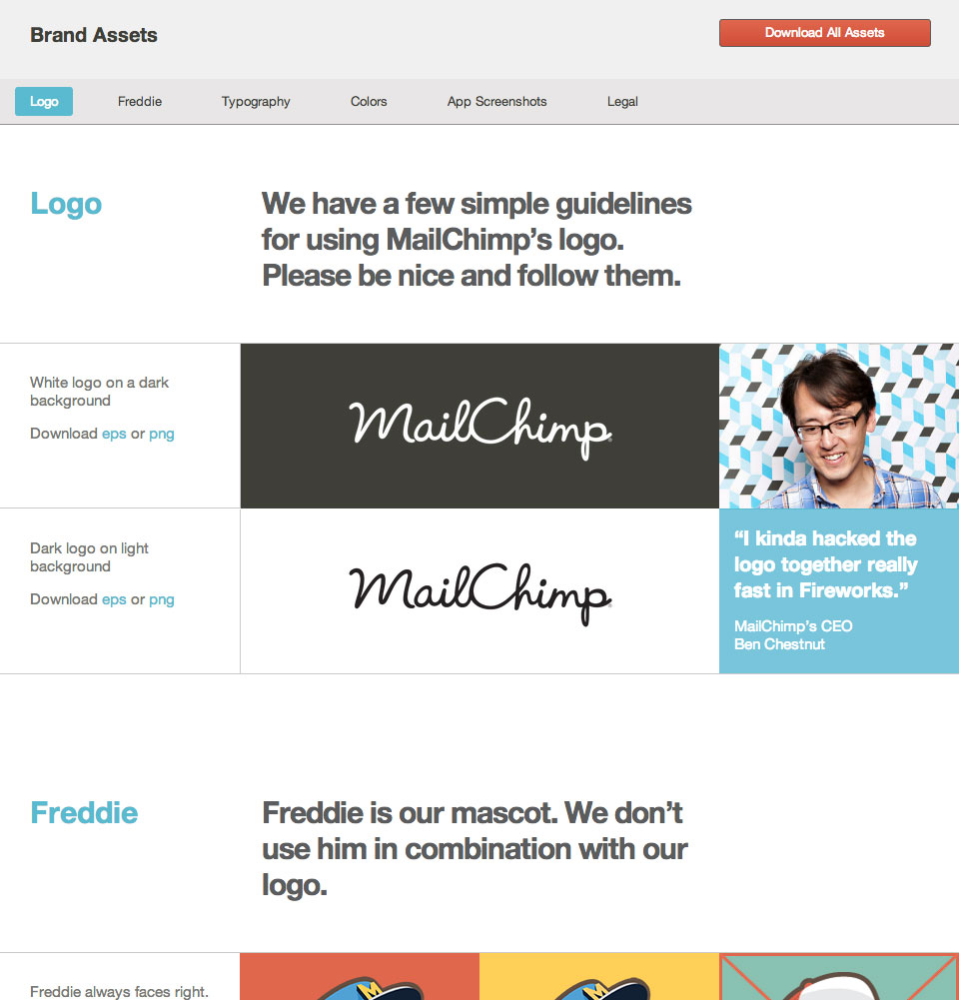
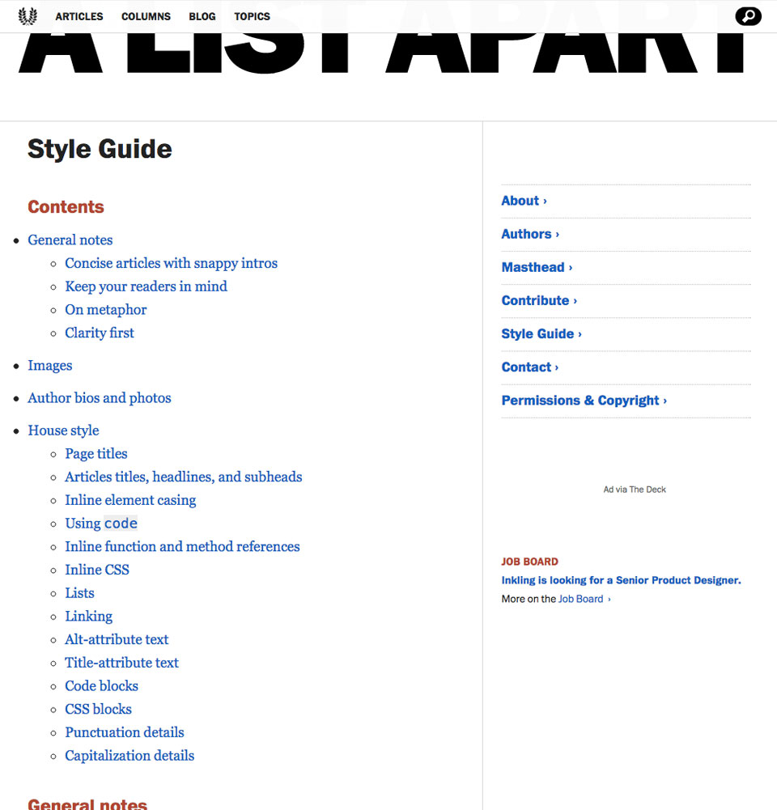
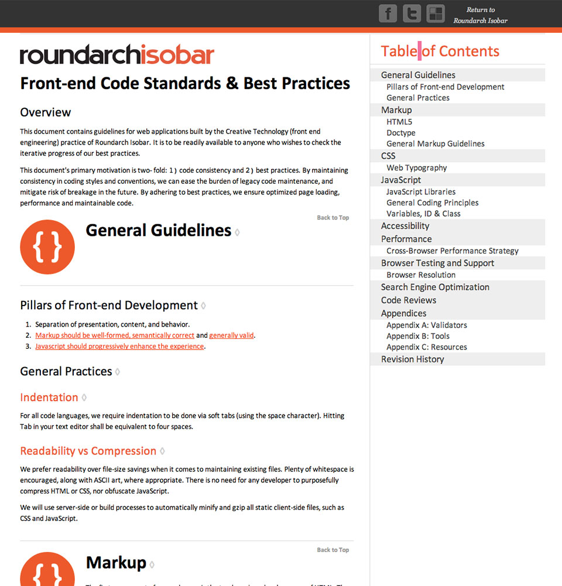
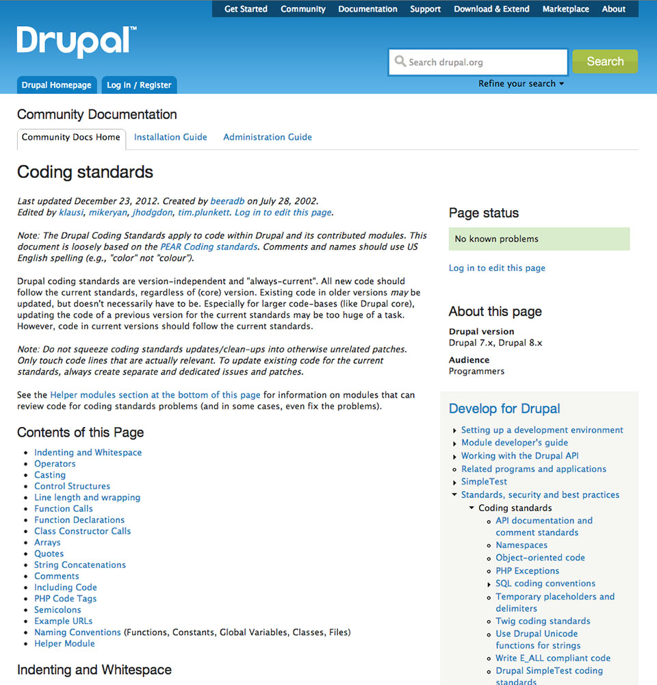
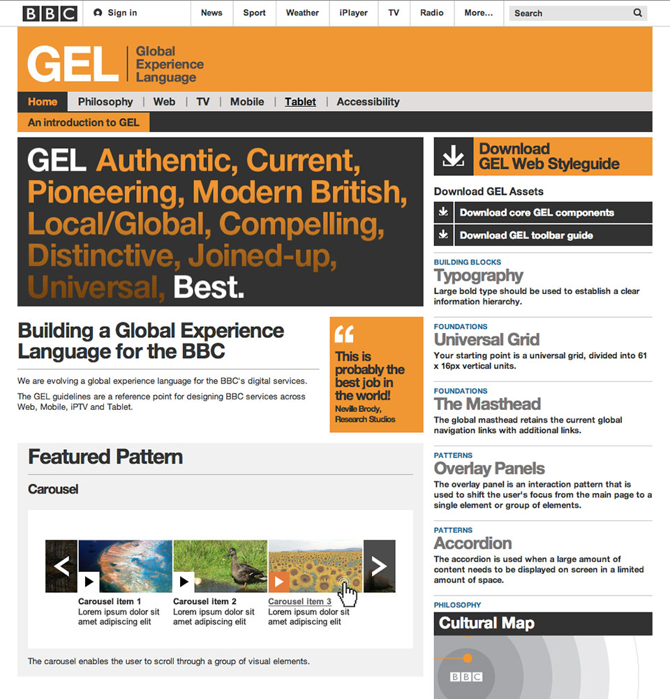
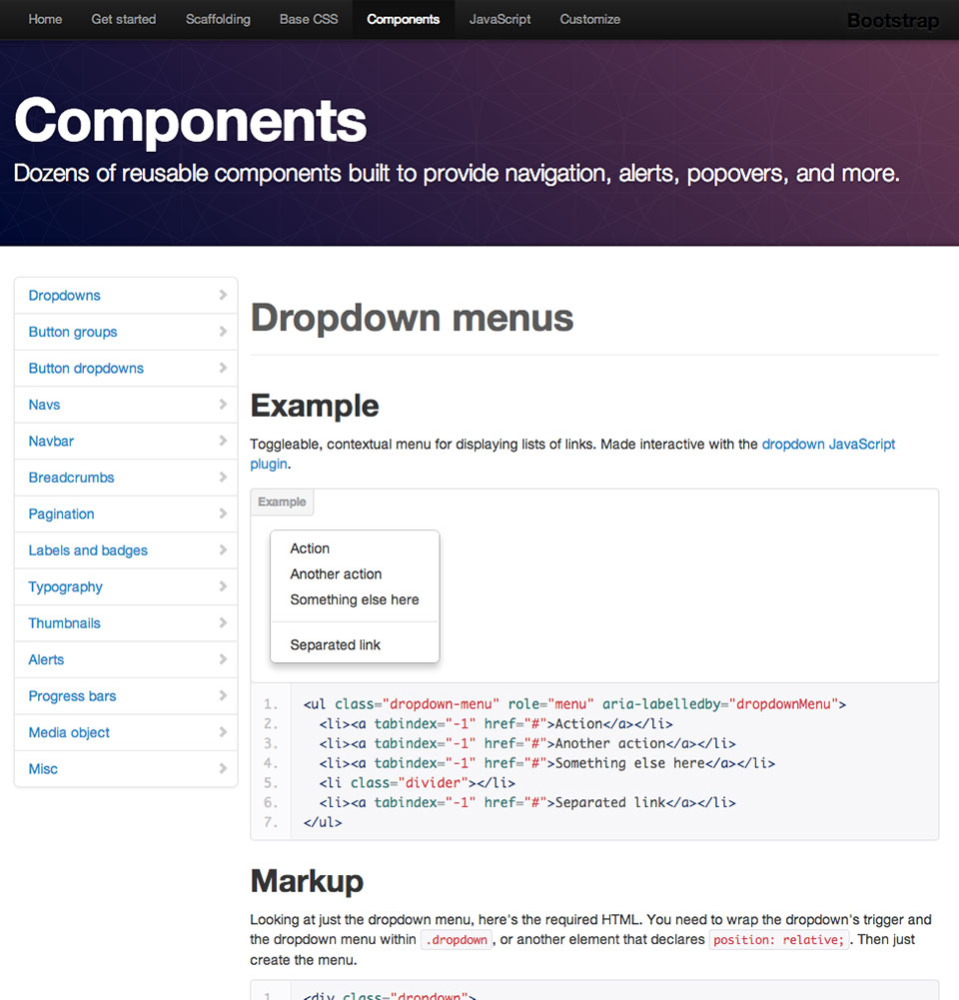
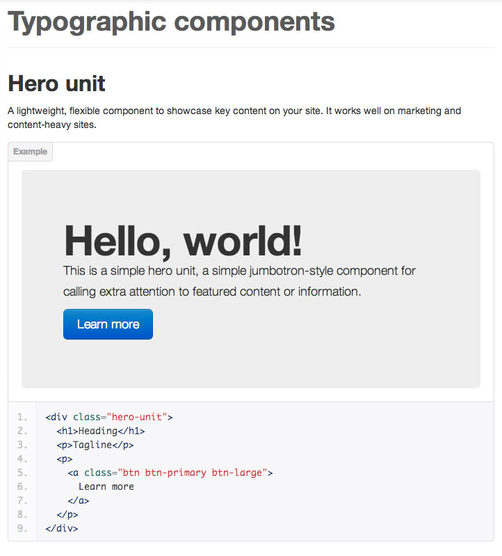
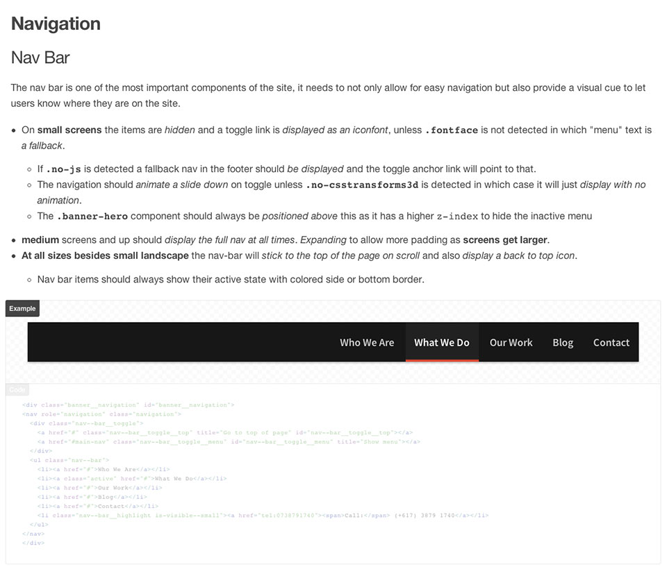

Improving Your Responsive Workflow with
Style Guides
The Web is inherently
fluid
responsive
adaptive
flexible
We can't
control
web “pages”
“Designers”
don't like this
Mockups as deliverables don't work
(Unless you are a masochist)
Stop
thinking of it as
responsive web design
It's more
than just
- Fluid grids
- Flexible images
- Media queries
The power of the Web is in its universality. Access by everyone regardless of disability is an essential aspect.
Think of it as a
universal system
with a
consistent experience
Design Systems
Not Pages
We're not controlling “pages”
but, creating a
consistent experience
The Core
Content
Useful, structured
and consistent data
Design
typography, colour, layout,
visual hierarchy and interaction
Design process
Design atmosphere
style tiles, pattern sheets,
experimental mockups
Design structure
screen and component wireframes
Prototypes
atmosphere and structure combine
How do we
design efficiently?
How do we
keep it consistent?
Design consistency
Style guides
The many faces of
style guides
Brand / mailchimp.com

Editorial / alistapart.com

Code / isobar.com

Code / drupal.org

User Interface / bbc.co.uk

Global Experience Language
Universal Experience System
Language / Oxford dictionary
2. A system of communication used by a particular country or community.
Style guides / design system
dictionary / language
UI/Systems / foundation

UI/Systems / bootstrap

Lessons
Bootstrap/Foundation
Abstracted components +
Decoupled layout =
D.R.Y.er Code
SMACSS
OOCSS
& BEM
Flexible
D.R.Y.
Systems
Advantages
Bootstrap/Foundation
- A lot of basic problems are already solved
- Predictable, consistent design
- Collaboration is easier
- You can test ideas quickly
Disadvantages
Bootstrap/Foundation
- Guidelines are general
- More pattern library than style guides
- Cookie cutter design
- Coding standards of others
- Most don't take the time to understand the code
- Your problems are usually different
to those they try to solve
Your own “Bootstrap”
Does that sound like something you might be interested in?
My project isn't big enough
Style guides take too long
Building a style guide…
quickly
Slow Style Guides
- Static Image based
- Pears
- Patternry
- KSS (Knyle Style Sheets)
- Pattern Primer/Pattern Response
Remove as much
friction as possible
Rapid Style Guides
Styledocco
Kalei Styleguide
Example

Example / code
/*
## Typographic components
### Hero Unit
A lightweight, flexible component to showcase key content on your site. It works well on marketing and content-heavy sites.
```
<div class="hero-unit">
<h1>Heading</h1>
<p>Tagline</p>
<p>
<a class="btn btn-primary btn-large">
Learn more
</a>
</p>
</div>
```
*/
.hero-unit {
//Styles
}
Advantages
Rapid Style Guides
- Created as you code
- No extra file up-keep
- Makes the CSS easier to read
- We can use them to design & test components
- Helps designers & developers collaborate
- Multiple versions for clients & developers
It's not perfect
I would like to see…
- Better usability
- Context altering
- File agnostic
- Isolation
Implementing
UI Style Guides
Settings
start with
design atmosphere
Settings
- Typography
- Colours
- Baseline
- Common breakpoints
Elements
work out the basics
Elements
- Normalise
- Applying the Settings or
Atmoshphere
to basic HTML elements - These are the parts of the system that don't change too much across contexts
- Their documentation can be reused between projects
Layout
create some structure
Layout
- Grid Systems (How will they adapt?)
- What are your containers?
- Structure, nothing else
- Based off screen wireframes
Components
Identify Patterns
This is where it gets interesting
Components
- Use everything you have learned so far
- Sketch out ideas first
- Use in conjunction with prototypes
- Design Universally
Purpose
- What does this need to be used for?
- What tasks will it perform?
Purpose / e.g. navigation
- Allow an easy, usable way for users to access the content they need
- Convey where the user currently is to avoid confusion
Context
- Screen size
- Container size
- Location/Heirachy
- Device Features
Adaption
- Structure
- Size
- Content (Careful)
- Interactions
Context causes Adaption
In practice
- Are there patterns that already work?
- Is it worth breaking existing patterns?
Example / navigation
/*
### Nav Bar
The nav bar is one of the most important components of the site, it needs to:
- Allow an easy usable way to get around
- Convey where the user currently is
- On **small screens** the items are *hidden* and a toggle link is *displayed as an iconfont*, unless **`.fontface`** is not detected in which "menu" text is *a fallback*.
- If **`.no-js`** is detected a fallback nav in the footer should *be displayed* and the toggle anchor link will point to that.
- The navigation should *animate a slide down* on toggle unless **`.no-csstransforms3d`** is detected in which case it will just *display with no animation*.
- The **`.banner-hero`** component should always be *positioned above* this as it has a higher `z-index` to hide the inactive menu
- **medium** screens and up should *display the full nav at all times*. *Expanding* to allow more padding as **screens get larger**.
- **At all sizes besides small landscape** the nav-bar will *stick to the top of the page on scroll* and also *display a back to top icon*.
- Nav bar items should always show their active state with colored side or bottom border.
```
<div class="banner__navigation" id="banner__navigation">
<nav role="navigation" class="navigation">
<div class="nav--bar__toggle">
<a href="#" class="nav--bar__toggle__top" title="Go to top of page" id="nav--bar__toggle__top"></a>
<a href="#main-nav" class="nav--bar__toggle__menu" id="nav--bar__toggle__menu" title="Show menu"></a>
</div>
<ul class="nav--bar">
<li><a href="#">Who We Are</a></li>
<li><a class="active" href="#">What We Do</a></li>
<li><a href="#">Our Work</a></li>
<li><a href="#">Blog</a></li>
<li><a href="#">Contact</a></li>
<li class="nav--bar__highlight is-visible--small"><a href="tel:0738791740"><span>Call:</span> (+617) 3879 1740</a></li>
</ul>
</nav>
</div>
```
*/
Example / navigation
Dependencies/references
- Other components it uses
- What elements it should be used with
- Javascript files
- Source preprocessor file
- Fonts
- Images
Other areas
- States
- Theme/skin
Results in
- Allows for a more agile workflow
- It helps optimise your code by giving designers and developers a greater understanding of what is happening
- It's documented with the site. (If you need to go back to it, it's easier to understand the stupid mistakes you made, you will make them)
- Useful for even small sites (At the very least for settings and elements)
Takeaways
- Design consistent systems and experiences using
atmosphere
and structure - Use a collaborative work-flow
- Make systems quick and easy to build and maintain
- Build on past experiences and resources
- Abstract components and think about purpose, context and adaption